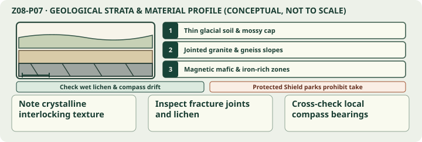

Z08-P07 · Rocks, minerals and materials · New manuscript
Precambrian Canadian Shield Outcrops in Northern Minnesota
Recognize ancient igneous and metamorphic Shield bedrock and its weathering, jointing, and magnetic field implications.
When it applies · Boundary Waters, Arrowhead, and northern Minnesota exposed bedrock terrain.
Equipment · Regional geologic map, hand lens, baseplate compass.

Actions
- Expect dense crystalline granite, gneiss, greenstone, and gabbro on northern Shield outcrops shaped by glacial scouring and steep joint planes.[R01, R02]
- Inspect smooth glaciated granite slopes for wet lichen, ice films, and exfoliation slabs that fail underfoot even on gentle grades.[R01, R16]
- Check magnetic compass needles against terrain features near dark mafic or iron-rich Shield bedrock because magnetite deflects bearings locally.[R20]
Failure recognition · Assuming dark Shield stone is uniform non-magnetic rock or that lichen-covered slabs offer reliable footing causes navigation drift and falls.[R16, R20]
Verify · Outcrop lithology notes separate crystalline Shield rock from loose drift and record any observed magnetic compass anomaly.[R01, R20]
Stop or change course · Stop scrambling on wet lichen slabs or collecting from Boundary Waters, Voyageurs, or protected Shield preserves.[R08, R09, R16]
Evidence and editorial notes
- R01 · Minnesota Geological Survey (UMN) · Minnesota Geological Survey Maps and Regional Geology (Current web edition)
- Section: Geologic provinces and bedrock mapping · Conditions: Minnesota and Upper Midwest regional bedrock/glacial terrain
Support: Minnesota spans Precambrian Canadian Shield igneous/metamorphic rock, Midcontinent Rift volcanics, Paleozoic sedimentary strata, and Pleistocene glacial drift.
Limitations: Surficial glacial till frequently conceals underlying bedrock; local geologic maps and field verification remain necessary. · Conflicting evidence: Generalized state maps do not confirm outcrop-scale rock composition.
Editorial note: Bounds Z08 regional geology framing. · Specialist reviewer: Geologist and regional survey reviewer
Primary source · checked 2026-11-25
Current assessment · A04-R01 (2026-11-25) · Bounded support confirmed from an alternate source (A04): MGS describes Precambrian basement, partial marine strata cover, rift rocks and widespread Quaternary glacial deposits. This is regional stratigraphy and provides no site identification. Limits: Specialist review PENDING (Geologist and regional survey reviewer); publication HOLD. All release decisions pending. - R02 · Minnesota DNR · Minnesota Geology and Glacial History Overview (Current web edition)
- Section: Glacial drift and landscape materials · Conditions: Glacial till, moraines, outwash, and lake-plain deposits
Support: Glacial transport mixes erratics and cobbles from distant source formations across Minnesota soils and stream beds.
Limitations: Cobble location does not prove local bedrock origin or uniform internal stone integrity. · Conflicting evidence: None noted.
Editorial note: Separates erratic cobbles from bedrock strata. · Specialist reviewer: Quaternary geologist
Primary source · checked 2026-11-25
Current assessment · A04-R02 (2026-11-25) · Bounded support confirmed from an alternate source (A04): Long-distance ice transport and mixed deposits are supported. The evidence cannot trace individual cobbles without local work. Limits: Specialist review PENDING (Quaternary geologist); publication HOLD. All release decisions pending. - R08 · National Park Service / eCFR · 36 CFR 2.1 Preservation of Natural, Cultural and Archeological Resources (Current CFR)
- Section: 36 CFR 2.1 natural resource collecting prohibitions · Conditions: National Parks, Monuments, and federal recreation areas
Support: Collecting rocks, minerals, fossils, wood, or natural specimens is prohibited on National Park System lands unless specifically authorized.
Limitations: Rules vary across USFS, BLM, state, tribal, county, and private lands; check the governing land manager before taking any sample. · Conflicting evidence: None noted.
Editorial note: Prevents unlawful federal resource extraction. · Specialist reviewer: Public-lands resource manager
Primary source · checked 2026-11-25 - R09 · Minnesota DNR · Minnesota State Park Rules and Resource Collecting Restrictions (Current web edition)
- Section: State park natural-feature protection · Conditions: Minnesota State Parks and Recreation Areas
Support: Removing rocks, minerals, soil, or live vegetation from Minnesota State Parks is prohibited to protect natural resources.
Limitations: Verify jurisdiction boundaries before picking up specimens even along shorelines or trails. · Conflicting evidence: None noted.
Editorial note: Bounds state-park material collection. · Specialist reviewer: Minnesota DNR resource manager
Primary source · checked 2026-11-25 - R16 · Minnesota DNR · Rocks and Minerals of Minnesota Educational Guide (Current web edition)
- Section: Sedimentary limestone, sandstone, and shale permeability · Conditions: Southeastern Minnesota karst, bluff, and river-valley sedimentary strata
Support: Sandstone, limestone, and shale differ sharply in cementation, porosity, and fissility, governing weathering and cliff instability.
Limitations: Karst bluffs and fractured shales shed rockfall unpredictably; visual inspection cannot certify slope or load stability. · Conflicting evidence: None noted.
Editorial note: Covers Upper Midwest sedimentary rock hazards. · Specialist reviewer: Engineering geologist
Primary source · checked 2026-11-25 - R20 · Minnesota DNR · Minnesota Geology and Glacial History Overview (Current web edition)
- Section: Iron-formation magnetism and compass deflection awareness · Conditions: Northern Minnesota iron ranges and mafic volcanic rock
Support: Magnetite-bearing iron formations and gabbro outcrops can visibly deflect magnetic compass needles locally.
Limitations: Deflection varies over short distances; cross-check bearings against terrain and non-magnetic cues rather than assuming uniform declination. · Conflicting evidence: None noted.
Editorial note: Cross-links Z08 geology with Z11 compass limits. · Specialist reviewer: Geophysicist and navigation specialist
Primary source · checked 2026-11-25
Source lineage · New manuscript (Z08 P16 regional formations) · Classification · New manuscript.